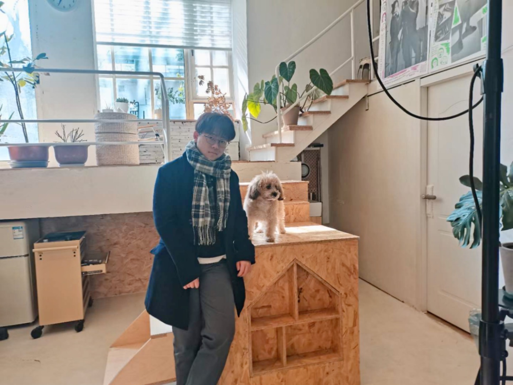
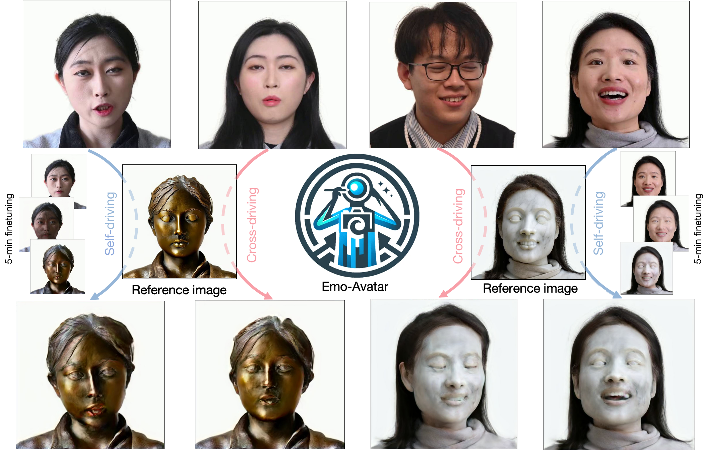

Andy (Pinxin) Liu



Hi!
I am an undergraduate student, supervised by Dr. Chenliang Xu, in Computer Science department at University of Rochester. My research interests are using deep learning techniques to solve various problems in 3D rendering and Multi-model Learning, including digital human, large language model, dynamic 4D rendering.
Here is my
NEWS
- [08/2023] One first-authored paper accepted to ICASSP 2024.
- [01/2023] One co-authored paper accepted to AAAI 2021 Workshop.
PAPERS
-

-

-

-
 Contextualized Multi-Step Commonsense Reasoning through Context Extension AAAI Workshop 2023[Paper]
Contextualized Multi-Step Commonsense Reasoning through Context Extension AAAI Workshop 2023[Paper]
Emo-Avatar: Efficient Monotonic Video Style Avatar through Deferred Neural Rendering
Under Review
-->
TEACHING
- 2024 Spring CSC 2/449: Machine Vision
- 2023 FALL CSC 446: Machine Learning
- 2023 SPRING CSC 2/447: Nature Language Processing
- 2022 Fall CSC 2/448 Statistical Speech and Language Processing
Reviewing
-
CVPR 2024, EMNLP 2023, KDD 2024, AAAI 2024